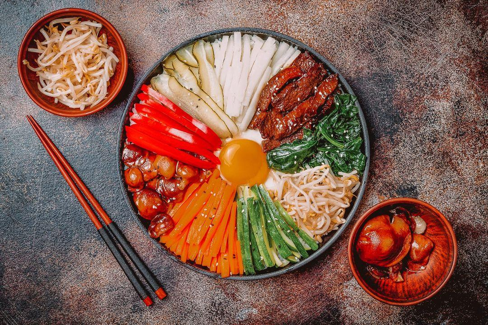
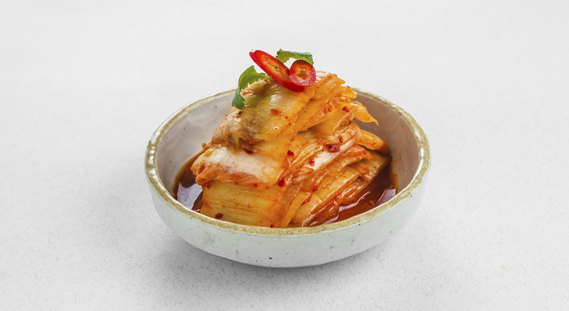
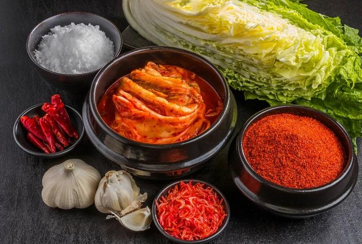

BTS — южнокорейский бойбенд, сформированный в 2013 году компанией Big Hit Entertainment. Коллектив состоит из семи участников: RM, Jin, Suga, j-hope, Jimin, V, Jungkook
Кухня Южной Кореи
Кухня Республики Кореи совсем не похожа на кухню своих соседей – Китая и Японии.
Их объединяет только обилие овощей, рыбы и острых блюд.
Основа корейской кухни – это рис, приготовленный всеми возможными способами.
Рис является основной трапезы, и все остальные блюда считаются лишь дополнением к нему.
Самые популярные из рисовых блюд – это «пап» - спрессованная рисовая каша;
«тток» или «чхальток» - отбивные хлебцы из риса; «пибимпап» - плов;
«кимпап» - сэндвич из омлета, овощей и риса;
а также просто рис с яичницей, холодными овощами и многими другими добавками.
Очень разнообразны закуски – панчхан – подаваемые к рису для добавления дополнительного вкуса.
Тарелочки с закусками обычно ставят вокруг главной миски с рисом.
«кимчхи» - острое блюдо из таких овощей, как редька или квашеная капуста;
«тубу» - творог из сои; «тотхоримук» - студень из желудей; «камчжачжон» - лепешки из картофеля;
а также многие другие блюда.

Что же такое "Кимчи" и почему в нашем ресторанчике его так любят?
Традиционный салат из острой пекинской капусты, который можно видеть на столе корейцев во время каждой трапезы, не так прост.
Название блюда произошло от китайского слова чмчхэ, оно переводится как вымоченные или соленые овощи.
Еще до появления знаменитых Трех королевств Кореи, во II веке до нашей эры кимчи уже оказывалось на столе корейцев.
Искусство приготовления кимчи не ограничивалось капустой, знаменитое блюдо корейской кухни делали из репы, огурцов,
баклажанов, тыквы, лука шнитт-лука, папоротника, побегов бамбука, корней и стеблей колокольчиков.

В чем полезность "кимчи"?
Кимчи - это невероятно полезная, низкокалорийная пища, богатая клетчаткой, витамином А, витамином С,
а также необходимыми для здоровья пробиотиками и антиоксидантами. Как мы уже упоминали выше, в ней совсем нет жира и белков.
Стоит отметить,что кимчи довольно соленый, поэтому не рекомендуется съедать больше одной порции в день.
Но поскольку его обычно употребляют как гарнир, большинство людей все равно не едят слишком много.
Зачастую, кимчи делают острым, как и многие блюда в Корее. Вы можете сами регулировать остроту, чтобы вам было комфортно есть.
Из-за высокого содержания антиоксидантов и пробиотиков кимчи - это невероятно полезное для здоровья блюдо.
Употребление квашеной корейской капусты способствует очищению кожи, укреплению иммунной системы и снижению уровня холестерина в крови.
